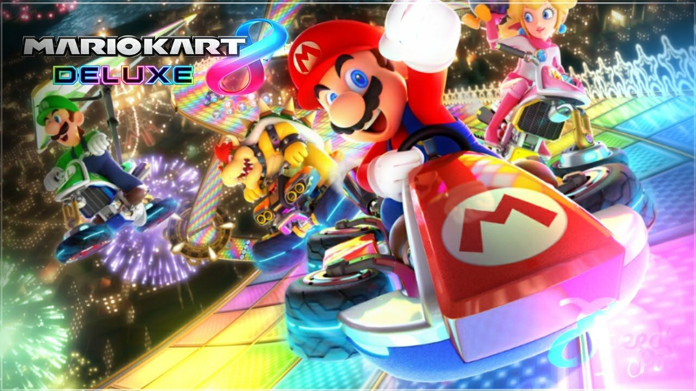
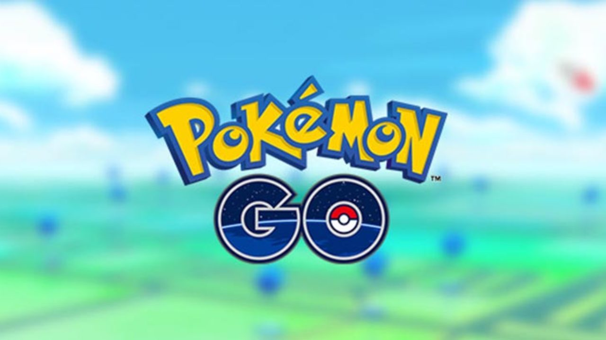
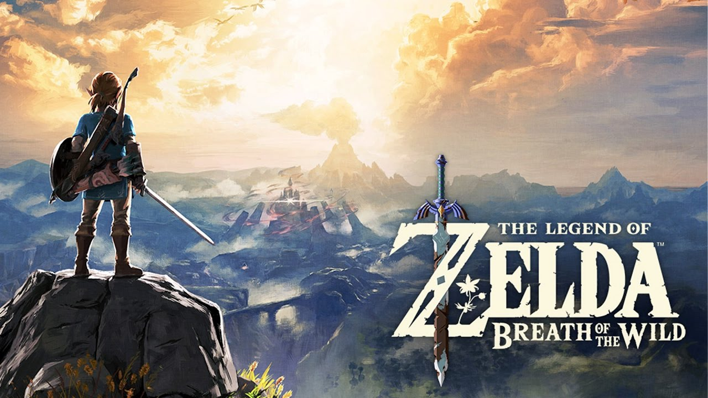

-
 Mario Kart 8 (Wii U/Switch) se tornou o jogo de corrida mais vendido da história nos Estados Unidos
-
 Pokémon GO (Mobile) contará com evento para celebrar a chegada de New Pokémon Snap (Switch)
-
 The Legend of Zelda: Breath of the Wild (Wii U/Switch) vira jogo de Game Boy Color pelas mãos de um fã.
-

Switch foi o console mais vendido em março nos Estados Unidos